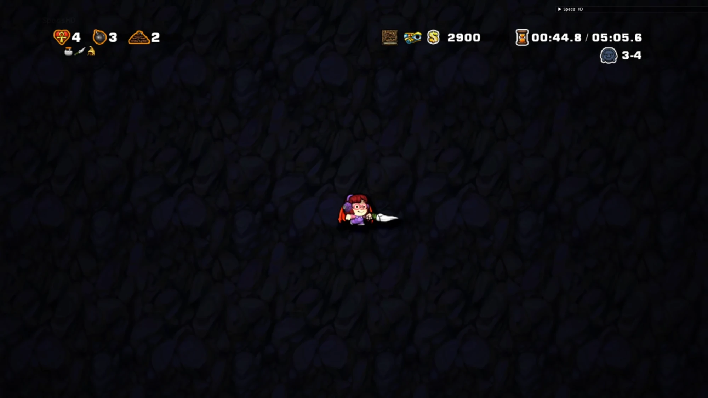

Enter MossRanking username, user ID, or just paste the link to your profile!
Make sure HD Toolbox and Spelunky are running.

Make sure to customize layout before copying the link!
View your PBs and enter your splits here!
View the current world records and splits!